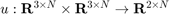

create_parking_controller
Returns a controller () that will drive a unicycle-modeled agent to a pose (i.e., position & orientation).
Contents
Detailed Description
- ApproachAngleGain - affects how the unicycle approaches the desired position
- DesiredAngleGain - affects how the unicycle approaches th desired angle
- RotataionErrorGain - affects how quickly the unicycle corrects rotation errors
Example Usage
parking_controller = create_parking_controller('ApproachAngleGain', 1, DesiredAngleGain', 1, 'RotationErrorGain', 1);
Implementation
function [ parking_controller ] = create_parking_controller(varargin) p = inputParser; addOptional(p, 'ApproachAngleGain', 1); addOptional(p, 'DesiredAngleGain', 1); addOptional(p, 'RotationErrorGain', 1); parse(p, varargin{:}); gamma = p.Results.ApproachAngleGain; k = p.Results.DesiredAngleGain; h = p.Results.RotationErrorGain; parking_controller = @park; function [ dxu ] = park(states, poses) %PARK Drives a unicycle-based system to a desired pose % This controller employs a CLF to drive a unicycle-modeled system to % a desired pose (i.e., position AND orientation) [M_states, N_states] = size(states); [M_poses, N_poses] = size(poses); assert(M_states == 3, 'Row size of states vector must be 3! Given size is %i', M_states); assert(M_poses == 3, 'Row size of desired poses (%i) must be 2!', M_poses); assert(N_states == N_poses, 'Row size of states vector (%i) must be row size of desired poses (%i)', N_states, N_poses); R = @(x) [cos(x) -sin(x) ; sin(x) cos(x)]; N_states = size(states, 2); dxu = zeros(2, N_states); for i = 1:N_states translate = R(-poses(3, i))*(poses(1:2, i) - states(1:2, i)); e = norm(translate); theta = atan2(translate(2), translate(1)); alpha = theta - (states(3, i) - poses(3, i)); alpha = atan2(sin(alpha), cos(alpha)); ca = cos(alpha); sa = sin(alpha); dxu(1, i) = gamma * e * ca; dxu(2, i) = k*alpha + gamma*((ca*sa)/alpha)*(alpha + h*theta); end end end